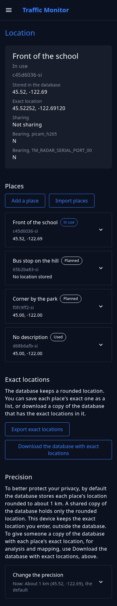
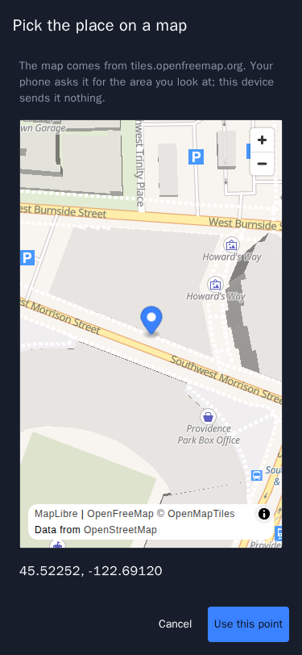
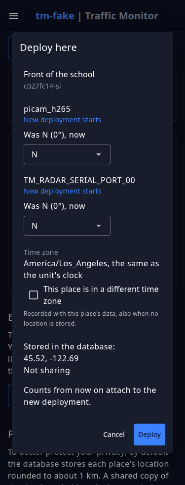
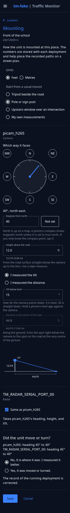

Places and location¶
Record where a Traffic Monitor is and how each sensor is mounted, choose how precisely the database stores its location, plan places, set a place's time zone, move or turn the device, correct a wrong location or heading, import places from a CSV file, export the exact locations as a list, and find where to download a copy of the database with the exact locations.
The control app's Location page records where the device is and which way its sensors face, and its Mounting page records how each sensor is mounted. The Location page also sets how precisely the database stores the location. Only the administrator sees the page, because it shows exact coordinates. A device that stays in one place works without it, so use it when you move the device, turn it, or plan to share its data.
Places and deployments¶
A place is somewhere the device has been, is, or will be. Each place has an id such as 3f9a1c2e-si, an optional description that only you see, and an optional location, its latitude and longitude. A place doesn't need a location: a device with none still counts and records its data, only without saying where. One place can hold sensors that face different ways, such as a corner with a radar looking down each street.
One place is always In use. The others are Planned, entered ahead of a move, or Used, where the device has been. Claiming a new device creates its first place, First location, with no location.
Each sensor at a place, facing one way, for one stretch of time, is a deployment. Every count and reading is stored with its deployment, so you can tell where it was taken after the device moves. Moving to another place, or moving or turning a sensor, starts a new deployment, and the earlier ones keep what they recorded.
The exact location is kept in the control app and in Node-RED's settings file, config.yml. The database stores the place's id and the location rounded to the precision you choose.
The Location page¶
Location is in the control app's menu, after Cameras. The card at the top shows the place in use: its description, its id, the location as the database stores it, the exact location, what the device shares, and the way each sensor faces. When the place has mounting values from the last time the unit was there, the card says so and has a Mounting button. Then come the list of places, the list of exact locations, and, last, the precision. A copy of the database with the exact locations in it is on the Sharing page.

Each place in the list shows its description, or No description, its mark (In use, Planned, or Used), its id, and its location as the database stores it. Select a place to open it. An open place shows:
- Imported from your previous settings for a place that came from an older version's data; see Update the software.
- When the place was first and last used, or Not used yet. A used place and the place in use also show their Time zone, or Not set; see Set the place's time zone.
- How many events were recorded there, and between which dates.
- Its deployments, newest first, grouped by when they were deployed: the sensors started together sit under one date, each with what it recorded, such as Facing NE (40°) · 7.0 ft up · tilted 15°. A radar deployed with a camera is indented under it. A sensor that ended before the rest of its group says when. A deployment that has ended has Correct heading. One that is running at the place in use has Mounting instead, because that is where it is changed.
- The buttons for what you can do with the place: Deploy here for a planned place, Re-deploy here for a used one, or Mounting for the place in use; Edit for a planned place; Correct location for a used place or the place in use that has a location; Time zone for a used place or the place in use; and Delete for any place but the one in use.
Before any place was recorded counts the deployments that had already ended when the device got its first place. They belong to no place, and the database keeps them as they are. Deployments still running then joined that first place.
If Node-RED hasn't answered yet, as right after an update, a warning at the top says past places may be missing. Reload the page once Node-RED is running. Opening the control app's home page or Status page sets the places up too.
Add a place¶
Choose Add a place, fill in what you know, and Save. The place is added as planned.
- Description: a name for the place, such as "Front of the school". It never leaves the device.
- Coordinates: the latitude and longitude, pasted from a maps app as one value, such as
45.52252, -122.69120, or picked on a map. Use a dot as the decimal mark. The device keeps five decimal places, about a metre. Use at least four, about 10 metres, for an exact location: with fewer, the form warns and says how coarse the point is (about 100 metres for three decimals, and coarser for fewer), and still saves it. Leave the field empty for a place with no location. - Time zone: the unit's clock's time zone, unless you tick This place is in a different time zone. See Set the place's time zone.
- Facing, for each sensor turned on in the settings: a compass point,
N,NE,E,SE,S,SW,W, orNW, or Not set. See Which way a sensor faces.
Use this phone's location fills in the coordinates from your phone's location. Browsers share a location only with pages opened over HTTPS, and the device uses plain HTTP, so the form usually says to paste coordinates instead.
Pick the point on a map¶
Under the coordinates, Pick on a map opens a map. Tap the spot to place a pin, drag the pin to the exact place, and choose Use this point. The form fills in the coordinates with five decimal places, and you can still change them before you save. The same button is on Correct location.

The map is drawn by your phone or computer, not by the device. It opens at the coordinates in the field, else at the place in use, else over the region of the device's time zone: a wide view around that city, about the size of a time zone. The device finds the region from its own time zone, so it asks no one, and uses it only when its Wi-Fi country is set and is one of the countries that time zone covers. Otherwise it opens on the whole world. The installer changes the time zone only when it is given its -z option, so a device keeps the time zone it came with, the one chosen when its card was imaged or the image's, until you set it on the Date and time page. Your browser asks the map's server, named in the dialog, for the pictures of the area you look at, and the device sends it nothing. The server sees the map tiles that cover the area you look at, squares of roughly one to two kilometres across, even when you zoom in as far as the map goes. That includes the area of the place in use the moment the map opens, even when you are adding a place somewhere else. Opened over the region, the map asks for tiles that cover an area thousands of kilometres across, which says little more than your phone's internet address already does. As any website does, the server also sees your phone's internet address. It never gets the exact point you choose. If the map can't load, the dialog says so and offers Try again; type or paste the coordinates instead.
The map isn't offered while your phone is on the device's own hotspot, because the hotspot has no internet. The form says so; paste the coordinates, or open the page once the device is on your Wi-Fi.
To get coordinates from a maps app on your phone, in Google Maps press and hold the spot, then copy the coordinates shown. In Apple Maps, drop a pin; its card shows the coordinates. The phone's GPS needs no internet connection, though the app's map may not draw without one.
To change a planned place, open it and choose Edit. A place that has been used can't be edited; correct it instead.
Set the place's time zone¶
The device stores every time in UTC. To read a place's data by the hour on the clock where the device stood, such as the morning rush, you need the place's time zone, so each place has one, recorded with its data. It is recorded also when no location is stored, so a place whose location you keep to yourself can still be read in local time.
A place gets the time zone of the unit's clock unless you say otherwise. Add a place, Edit, and the deploy review show it under Time zone, in a line such as "America/New_York, the same as the unit's clock", above one box:
- Tick This place is in a different time zone for a place in another time zone. A list opens, the same list as on the Date and time page: choose a name, or type part of one, such as
Berlin, to find it. Unticking the box puts the clock's time zone back. - The box is ticked when the place already has a time zone other than the clock's, so Edit shows it as it is.
- When the device can't say what its clock's time zone is, there is no line and no box: the list shows at once. If the list can't load, the box still works for the clock's time zone, and the field says why the list is off.
The time zone comes from the unit's clock, never from your phone or computer, because you may plan a place from somewhere else. It is saved as a name, so changing the unit's clock later doesn't change a place's records. The page can't clear a place's time zone. A planned place with none, from an older version or from an import that left it blank, gets the unit's clock's time zone at its deploy review.
The review saves a changed time zone before it deploys, and the new deployments carry it from their start. When you re-deploy a used place and change its time zone there, the change also corrects the time zone on that place's stored deployments, and the review says so under the field: "Changing it corrects this place's stored deployments." For a place that is used or in use, its panel shows Time zone, with Not set when it has none, and its Time zone button opens a dialog with the same control. Save corrects the time zone on the place's stored deployments, the ended ones too. It starts no new deployment, and it doesn't move or change anything else. For a place with none, Save sets the unit's clock's time zone, or the one you choose. On the place in use with no time zone, the panel also says "This place has no time zone. Set one so its data can be read in local time."
A place's time zone isn't the device's clock. The Date and time page sets the clock, and the Location page never does. When the place in use has a time zone other than the clock's, its panel says "The unit's clock is set to" the clock's time zone and "Change it on Date and time", with a link to the page. The line only informs: a place can rightly differ from the clock, but a device whose clock is wrong for where it stands needs its clock changed on that page.
Which way a sensor faces¶
A sensor's heading is the way it faces, in whole degrees clockwise from true north, from 0 to 359: 0 is north, 90 is east, 180 is south, and 270 is west. The page shows it with the nearest compass point, such as NE (40°). A point covers the 45 degrees around its centre, so 23 to 67 degrees is NE, and 338 to 359 and 0 to 22 is N.
The page lets you pick one of the eight points, which sets the heading to the point's centre, as the table of centres lists. Nothing stores the point itself, only the number. A heading you measured more closely, such as 40 from a compass app, or typed into config.yml or an imported file, is kept as it is and listed first in the choices as NE (40°), so opening the choice and closing it changes nothing. Pick a point only to replace it. Until you save or close the form, the measured heading stays in the list, so you can choose it again if you picked a point by mistake.
Use true north, not magnetic north, because the two differ by several degrees in many places, and a phone's compass app can show either. A heading is optional. Not set records that you haven't said.
A device updated from an older release has its earlier headings converted; see Headings after an update.
Move or turn the device¶
When the device moves to another place, record it from that place: Deploy here if the place is planned, or Re-deploy here if the device has been there before. When a sensor is moved or turned at the place in use, record it on the Mounting page.
- Open the place, and choose Deploy here or Re-deploy here.
- Check the review. For each sensor, it says whether a new deployment starts, the way the sensor faced before, and the way it faces now, which you can change. Under the sensors are the place's time zone, what the database will store for the place, and whether the device shares its data.
- Choose Deploy or Re-deploy.

The page waits while Node-RED starts the new deployments, then lists their ids, each with Copy. Counts from then on belong to the new deployments. Under the list is the next step, Mounting, which opens the page where you record how the unit is mounted. At a place the unit was at before, the values last saved there are offered, and the next step says so; Use these values and then Save confirm them. See A place used before.
Don't deploy twice
If Node-RED hasn't loaded the new settings within about 20 seconds, the page says the settings are saved and the deployments appear once Node-RED loads them. If the connection drops while the page waits, it says the settings may already be saved. In both cases, close the dialog and check the place in the list before you deploy again.
A deploy records none of a sensor's tilt, height, distance, or mount, at a place the unit was at before just as at a new one, because the unit was taken down and put up again. The sensors have none of the four until you record them on the Mounting page (see also How a sensor is mounted). The heading is the one you choose in the review, which starts from the place's last one.
A move usually also needs the camera's zones adjusted; see First-time setup.
Record how the unit is mounted¶
The Mounting page records how each sensor is mounted at the place in use. Open it from the Mounting button in the place in use's panel in the list, from the Mounting link on a running deployment, from the button the deploy leaves, or from the card at the top while the place has values from last time to confirm. Only the administrator sees it. It works on the unit's own hotspot, because it needs no internet.

The page says what the numbers are for: they are stored with each deployment and help place the recorded paths on a street plan. Under the title are the Units, Feet or Metres, and Start from a usual mount. Then comes a section for each sensor, with a camera first and its radar under it. If Node-RED doesn't answer, the page warns that changes can't be saved, and Save stays off.
Everything is optional. Record what you know, and leave the rest empty. Use Save when you are done: nothing is recorded until then, and Cancel goes back to the Location page.
Feet and metres¶
Feet is the default. Each length is shown in the unit you chose, and under it in the other, such as 7.0 ft (2.13 m). The page remembers your choice in the browser. The device stores metres, rounded to two decimals, so a length typed in feet is stored as the nearest centimetre, and a length you don't touch, or type back to what it showed, is saved exactly as it was. A comma works as the decimal mark too, as in 7,5, but not before exactly three digits, as in 1,000. A field that holds something that isn't a number says Enter a number, such as 12 or 12.5., and Save stays off until you fix it.
Start from a usual mount¶
Picking a usual mount fills in a typical height and tilt for every camera and radar section, chooses I measured the tilt, and records the mount's name. It changes nothing else. Change the numbers afterwards to what you measured, or choose My own measurements to keep the numbers and drop the name of the mount. Nothing is saved until you choose Save. The three mounts are in Usual mounts.
Which way it faces¶
Each sensor has a dial labelled Which way it faces. The heading is in whole degrees clockwise from true north, as in Which way a sensor faces. Set it in any of these ways:
- Tap or drag on the ring. North is at the top. The needle follows your finger, and a drag may leave the ring. Pressing the very centre changes nothing.
- Tap one of the eight compass points around the ring, which sets the heading to the point's centre. This is fine when the point is all you know.
- Type a number in Degrees from north. A number that isn't a whole number from 0 to 359 gets the message Enter a whole number from 0 to 359. An empty field changes nothing: use Not set to clear the heading.
The dial also says the heading in words, for example, "52°, north-east." A line of help says: "North is up on a map. A phone's compass shows magnetic north unless it is set to true north. If you only know the compass point, tap it."
Height, tilt, and distance¶
For each camera and radar that isn't following its camera (see Radar), three values describe how it is aimed.
| Field | What it is | How to measure it |
|---|---|---|
| Height above the road | How high the lens is above the road. | "From the road surface straight below the camera up to the lens. Use a tape measure." |
| Tilt below level | How far the camera points down, in degrees. | "How far the camera points down. 0 is level, 90 is straight down. Hold a phone's level app against the camera." |
| Distance to the centre of the view | How far away the middle of the picture is on the road. | "Along the ground, from the spot right below the camera to the spot on the road at the very centre of the picture." |
The tilt and the distance describe the same thing from two sides, so with the height you measure one and the page works out the other. Choose I measured the tilt or I measured the distance. The other field is greyed out and shows what the page worked out. A tilt of 0 points at the horizon, so it has no distance, and the field stays empty. Choosing the other as the one you measured starts it from the number it showed, or, when the page can't work one out because there is no height yet, from the number you last typed in it, so switching changes no number.
The side view under the fields draws the road, the support with the unit on it at its height, and the line of sight down to the centre of the view, with the three values beside their parts. It follows what you type. With no height it says "Enter the height to see the side view."
The page records no roll, so level the camera from side to side when you mount it.
A radar with its camera¶
A radar that a camera names has a checkbox, Same as and the camera's name. Tick it for a radar that sits in the same case as its camera: the section then reads "Takes picam_h265's heading, height, and tilt.", with your camera's name in place of picam_h265, and records the camera's values. Untick it to give the radar values of its own, which start as the camera's. The page never ticks the box for you, but it shows it ticked when the radar's values already equal the camera's. An air-quality monitor has the dial only, because it has no height or tilt to record.
A place used before¶
When the unit comes back to a place it was at before, the control app remembers what was last saved there for each sensor. Those values aren't recorded again by themselves, because the unit was taken down and put up again. Instead the Location page's card and the deploy's result say: "This place has mounting values from the last time the unit was here. They aren't recorded until you confirm them." A place with nothing to offer says "Next, record how the unit is mounted." after a deploy.
On the Mounting page, the sensor's section starts with "From last time:", then its height, tilt (or, without one, its distance), and mount, such as "From last time: 12.0 ft up, tilted 15°, pole or sign post". Choose Use these values to fill the fields in, check them, and choose Save. Saving confirms them, and the notice goes. A radar ticked Same as its camera shows its own notice only when its values from last time aren't the camera's; there, Use these values unticks it and fills in its own values. The notice stays until you save that sensor: there is no way to dismiss it. A value typed into config.yml by hand isn't remembered.
Did the unit move or turn?¶
Changing a value that was already recorded raises a question, because a change can mean two things. Either you measured it better, and the record was wrong, or the unit really moved or turned, and the traffic from now on belongs to a new deployment. The page asks "Did the unit move or turn?" above Save when both of these hold:
- A value that was set is changed or cleared: the heading, the height, or the one of tilt and distance that you measured. Filling in an empty value doesn't count. The name of a usual mount never counts, but the height and tilt a usual mount fills in do when they replace values that were set, so switching from one mount to another after traffic was recorded can raise the question. The tilt or distance the page worked out is never a change of its own.
- The running deployment has recorded traffic, or Node-RED couldn't say. Before it has recorded anything, a change corrects it.
The question lists only the changes that count, such as "picam_h265: heading 40° to 62°", and offers two answers:
- No, it is where it was. I measured it better. The running deployment's record is corrected in place. The page says: "The record of the running deployment is corrected."
- Yes, it was moved or turned. A new deployment starts now for each sensor with a change that counts. The page says: "A new deployment starts now for" those sensors, and "Traffic already recorded keeps the old values."
The page chooses one for you from the size of the change. It chooses the second when the heading turned by 20 degrees or more (the smaller angle: 350° to 10° is 20°), the height changed by 0.3 m (about a foot) or more, or the tilt by 5 degrees or more. It chooses the first for anything smaller. Change the answer if you know better. The page asks again, and chooses afresh, whenever the changes that count are no longer the ones you answered for. A change that isn't asked about, such as filling in a value for the first time, corrects the running deployment.
The result¶
Save stays off until something differs from what the page loaded, the page has checked the form, and no field is refused. After a save the page says one of:
- "Saved."
- "Saved. A new deployment started for" the sensors that got one.
- "Saved. Node-RED hasn't loaded the settings yet; the new deployment appears once it does. Don't save again."
- The reason the save was refused, such as a value outside its limit, which shows under its field. Nothing is half saved: when a save is refused, the record and
config.ymlstay as they were.
The limits are a height above 0 and at most 100 m, a tilt from 0 to 90 degrees, and a distance from 0 to 1,000 m. After each change, the page waits a moment and then has the control app check the whole form, which is how it works out the tilt or distance and knows whether to ask a question. The control app doesn't save anything until you choose Save. If the check gets no answer, for example because the phone left the unit's Wi-Fi for a moment, the page says so under Save with Try again, and Save stays off until the check is answered.
What is stored
The five values (heading, tilt, height, distance, and the usual mount's name) are stored with each deployment, in config.yml under the sensor, and, with Share data, sent with the deployment rows. They hold no place's coordinates or name. See How a sensor is mounted.
Correct a wrong location or heading¶
A correction is for a value that was entered wrong. It changes what the records already say, and starts no new deployment. If the device moved or was turned, record that or, at the place in use, on the Mounting page instead.
- Correct location, on a used place or the place in use, takes a new latitude and longitude, typed or picked on a map. Every record from the place then says it was at the new point, rounded to the precision each was stored at. For the place in use,
config.ymltakes the new point too. A point more than about 1 km from the old one looks like a move, so the page asks a second time and gives the distance. A place with no location can't be corrected to one: add a new place with the location, and deploy it. - Correct heading, on each deployment that has ended, takes the way the sensor really faced, as a compass point or Not set. Every record from that deployment then says so. A deployment that is running at the place in use is corrected on the Mounting page instead: change the heading there and, if the page asks, answer "No, it is where it was. I measured it better." The one exception is a sensor that is listed but turned off in
config.yml, which has no section on the Mounting page: its running deployment keeps Correct heading, andconfig.ymltakes the new heading too.
Each correction can have a Reason, which is kept with the correction on the device. Copies of the database already downloaded, and data already uploaded, keep the old values.
Import places from a file¶
To plan several places at once, choose Import places. Pick a CSV file, or paste its lines into the box.
- The first line is the header. It starts with
description,lat,lon, then has one column for each sensor turned on in the settings, named as in the settings, and may have atimezonecolumn anywhere afterlon. The dialog shows this device's header. - Each further line is one place. Leave
latandlonboth empty for a place with no location. A sensor's column holds the way it faces: a compass point (n,ne,e,se,s,sw,w, ornw), a heading in whole degrees from north (0 to 359, such as40), or nothing. A point is saved as its centre, soeis 90. - The
timezonecolumn holds a time zone the device knows, such asAmerica/New_York, or nothing. A place with none gets the unit's clock's time zone when it is deployed, as under Set the place's time zone. A line with a time zone the device doesn't know is refused, and the preview names the line. - A file can be up to 64 KiB.
For a device with the Pi camera and one radar:
description,lat,lon,timezone,picam_h265,TM_RADAR_SERIAL_PORT_00
Front of the school,45.52252,-122.69120,America/Los_Angeles,n,n
Corner by the park,,,,e,e
Choose Preview to see the places the file holds, each with its time zone when it has one, and, by line number, any lines with a problem. Import adds the places as planned. It's offered only when every line can be read, and it adds all of them or none.
Delete a place¶
Open the place and choose Delete, then confirm. A planned place is removed from the list. A used place's exact location is deleted with it, and the database keeps the rounded location stored with each of its records. Deleting can't be undone.
The place in use can't be deleted. Deploy another place first.
Export the exact locations¶
Export exact locations, above the precision, saves a CSV file with one line for each place: its id, its exact latitude and longitude (empty for a place with no location), its time zone (empty for a place with none), its mark, and when it was added and last changed. It has no descriptions. Use it to match a copy of the database, which holds each place's id and rounded location, with where the device really was, for analysis and mapping.
The page asks first, because the file says exactly where the device has been, and anyone you give it to can match it to the database by place id. To get the exact locations inside a copy of the database instead, see Download your data on the Sharing page.
Download the database with exact locations¶
This download moved to the Download your data card on the Sharing page. Tick Include each place's exact location there to save a copy of the database that also holds where the device was.
Choose the precision¶
Precision, at the end of the page, sets how much of the location the database stores. To better protect your privacy, it's rounded to about 1 km by default. The choices stay closed until you open Change the precision, which also shows the current choice, because most devices never need to change it. The setting is for the whole device, not for one place. Each choice shows how the same point would be stored:
| Choice | The database stores |
|---|---|
| No location stored | No coordinates |
| About 10 km (45.5, -122.7) | One decimal place, about a city |
| About 1 km (45.52, -122.69), the default | Two decimal places, about a neighborhood |
The exact location is never stored in the database. It stays on this device, and leaves it only if you share it, export it, download a copy of the database that holds it, or save it with a camera's reference picture. Choose one and Save.
- A coarser choice applies to the deployments running now at once. Rows stored before them keep their precision unless you tick Also round the rows already stored, which asks first, because it can't be undone.
- No location stored removes the stored location from the deployments running now at once. Tick Also remove it from the rows already stored to remove it from every row in the database as well, which also asks first. The exact location stays on the device, but the database can't get the rounded values back.
- A finer choice applies from the next deployment. Rows already stored stay as they are, because what was rounded away can't come back.
What leaves the device¶
- A place's description, and the reasons you give for corrections, never leave the device.
- A copy of the database holds the place's id and its location at the stored precision: about a neighborhood at about 1 km, or about a city at about 10 km. The exact location isn't in it, unless you made the copy with Include each place's exact location ticked under Download your data on the Sharing page, which adds each place's exact location in a table of its own.
- Data you share carries the location as the database stores it. The exact location goes only if you tick Share the exact location, and only for the place in use. The file from Export exact locations, and the copy from Download your data with the exact locations, go where you send them.
- A camera's reference picture holds the exact location of the place in use unless you clear Include this place's exact location, and the pictures show the street. The zip goes where you send it.
- A correction or a coarser precision changes the device's own records only. Copies of the database already downloaded, and data already uploaded, keep the values they had.
To change these values in config.yml by hand, see Edit the location by hand.